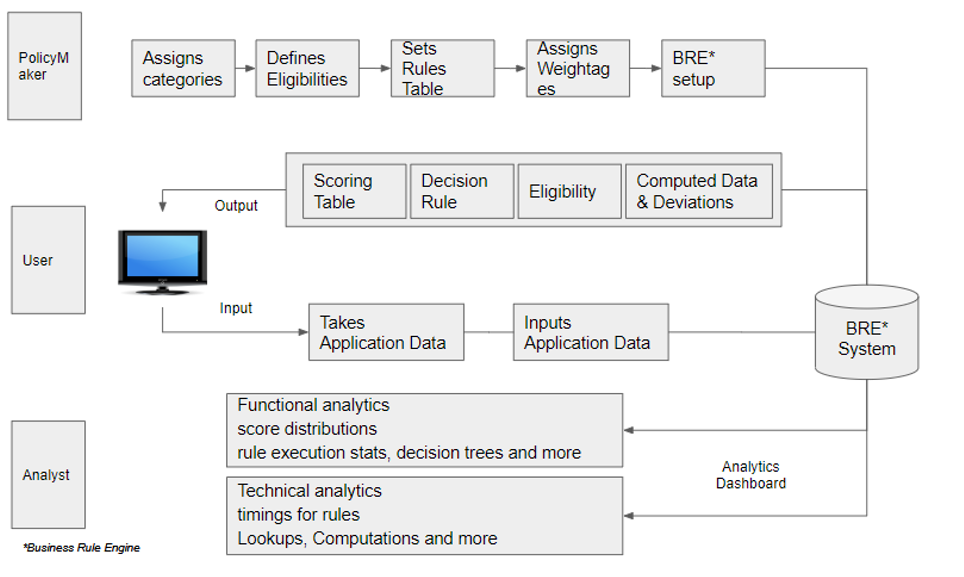

Impactful businesses prosper by implementing strategic decisions through certain guiding business rules. . It is the sanctity of the rules which ensure the optimal decisioning, which enhances business outcomes. Decisions may misfire or be counterproductive, if not backed by data and a logical analysis of such data. It is therefore paramount that data is scrubbed, rechecked, and analysed in depth to arrive at strategically aligned business decisions . It is in such an environment that BREx becomes a big differentiator for business driven by data rules.BREx would have help a credit policy designer or an underwriter minimize potential NPAs., BREx becomes the best solution at hand.
Some of the key functions of BREx are:
Quick and easy category, criteria and rules setup.
Decision in less than 60 seconds.
Quickly Enable, disable and promote schemes at convenience.
Built-in analytics - functional and technical performance.
Intuitive and easy to use GUI.
Any customised rule changes can be integrated immediately in the workflow.
Quick and easy category, criteria and rules setup.
Decision in less than 60 seconds.
Quickly Enable, disable and promote schemes at convenience.
Built-in analytics - functional and technical performance.
Intuitive and easy to use GUI.
Any customised rule changes can be integrated immediately in the workflow.
The Business Rule Engine (BREx) is a decision making tool that helps users evaluate applications. Applications (data inputs) can be categorized and evaluated against rules that can be configured as per the requirement of the business. These categorizations, rules and their weightages can be set by user as per their convenience and as per their own standards. These Rule-settings take only a few seconds to update and can be set-up easily by the user in a highly user friendly interface framework. The rule-setting requires no prior technological knowledge and is highly configurable intuitively. Once the Rules are set, the same can be pushed into the working algorithm with just one press of a button. Apart from the ease in rule settings, BREx also provides built-in analytics that help determine application-wise performance both from a technical as well as functional perspective.
How does it do it?
The rules engine comes with a multi-tier scorecard definition module that can be used to generate custom risk scores as well as other decision scores
Untracked deviations from standard underwriting policies without meaningful mitigants, and a lack of proper review and approval, can be big contributors to a loan portfolio’s losses. BREx can scan through application data real-time (including data from other standard sources like the credit bureaus) to swiftly determine, log and raise policy & operational deviations to relevant personnel for review. This reduces turnaround times and errors significantly.
BREx allows complex loan eligibility computations using application data, derived risk scores as well as other derived (computed) fields.
Configurable Portfolio Level Rules which get triggered on a real time basis. The objective is to proactively control the underwriting process instead of doing it with a lag.
Few Examples:
Ability to host, trigger and communicate with the advanced ML AI models in seamless manner for consuming them real time in the underwriting decision process.
Flexibility to configure and run multiple models/ scorecards offline and compare their performance
and/or results on a real time basis by leveraging our highly interactive user interface. Further to
this, switch to the offline scorecards that emerge as potential challengers to existing live model/s
in an effortless manner.
Advantage - Explore multiple scorecards leveraging different models / approaches/ strategies and
measure impact real time and perform course correction (risk mitigation / business growth), all at
the click of the button, thus saving data extraction, cleansing, analysis and eventual development time
delays. ‘You sense it, you see it, you crack it’.
Plug the repayment information, Bureau scrubs data into the engine. Configure rules to validate
the scorecard performance and take corrective actions.
Advantage - Shift from the age old mindset where LMS does not communicate back to Rule Engines/ LOS.
Why not leverage the feedback loop in today’s machine learning world?
Most credit managers would agree with the following:
Rule optimizer being intelligent avoids users from creating redundant parameters and rules. Further to this, it provides detailed insights (reports) which helps optimize the rule engine from time to time, thus improving the overall efficiency.